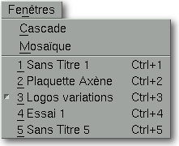

<!-- Documentation XQuad (c)1995-2000 AXENE contact axene@axene.org>
<html>

<head>
<title>Menu Fenêtres</title>
</head>

<body BGCOLOR="#FFFFFF" BACKGROUND="Images/back.gif" TEXT="#000000">

<p ALIGN="right">  </p>

<p><br>
<br>
Le menu déroulant Fenêtres permet de disposer les fenêtres de document dans des
configurations particulières et d'accéder rapidement à celles-ci. <br>
<br>
</p>

<hr>

<p align="center"><br>
 <br>
<small><i>Photo d'écran&nbsp;: Menu déroulant Fenêtres </i></small></p>

<p><br>
</p>

<hr>

<p><br>
</p>

<h3>Le menu Fenêtres comporte les entrées suivantes&nbsp;:</h3>

<ul>
  <li><a NAME="cascade_menu_entry">l'entrée <i>&quot;Cascade&quot;</i> permet de <b>disposer
    toutes les fenêtres de document en cascade</b>. Un placement en cascade superpose les
    fenêtres les unes sur les autres avec un léger décalage en diagonale vers le bas à
    droite qui permet de voir les titres de tous les documents. </a><br>
    &nbsp;</li>
  <li><a NAME="mosaic_menu_entry">l'entrée <i>&quot;Mosaïque&quot;</i> permet de <b>disposer
    toutes les fenêtres de document en mosaïque</b>. Un placement en mosaïque permet de
    voir l'intégralité des fenêtres sans superposition, avec une organisation la plus
    égale possible du plan de travail. </a></li>
</ul>

<p><br>
<a NAME="document_menu_entries">Les entrées suivantes correspondent à la <b>liste des
documents ouverts</b> dans XQuad, classés du plus récent au plus ancien. Le nom de
chaque document apparaît dans la liste. Choisir une entrée de la liste sélectionne le
document correspondant. Le nom du document actif est précédé d'un marqueur dans la
liste. Celle-ci est limitée à 15 documents affichés mais il est possible d'en ouvrir
plus. </a></p>

<p><br>
</p>

<hr>

<p ALIGN="right"></p>
</body>
</html>
